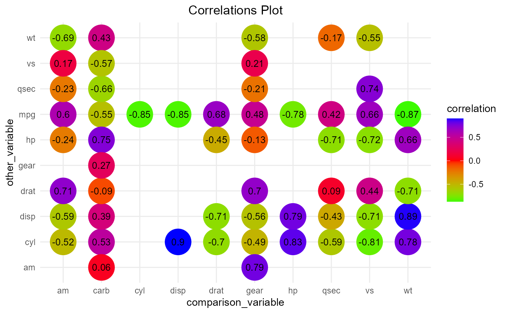

This function plots the results produced by `get_var_corr_`.
plot_corr( df, x = "comparison_var", y = "other_var", xlabel = "comparison_variable", ylabel = "other_variable", title = "Correlations Plot", plot_style = "circles", title_just = 0.5, round_which = NULL, colour_by = NULL, decimals = 2, show_which = "corr", size = 12.6, value_angle = 360, shape = 16, value_size = 3.5, value_col = "black", width = 1.1, custom_cols = c("indianred2", "green2", "gray34"), legend_labels = waiver(), legend_title = NULL, signif_cutoff = 0.05, signif_size = 7, signif_col = "gray13", ... )
| df | The data to be plotted. A `data.frame` object produced by `get_var_corr_` |
|---|---|
| x | Value for the x axis. Defaults to "comparison_var" |
| y | Values for the y axis. Defaults to "other_var." |
| xlabel | label for the x axis |
| ylabel | label for the y axis |
| title | plot title. |
| plot_style | One of squares and circles(currently). |
| title_just | Justification of the title. Defaults to 0.5, title is centered. |
| round_which | Character. The column name to be rounded off. |
| colour_by | The column to use for coloring. Defaults to "correlation". Colour strength thus indicates the strength of correlations. |
| decimals | Numeric. To how many decimal places should the rounding be done? Defaults to 2. |
| show_which | Character. One of either corr or signif to control whether to show the correlation values or significance stars of the correlations. This is case sensitive and defaults to corr i.e. correlation values are shown. |
| size | Size of the circles for plot_style set to circles |
| value_angle | What angle should the text be? |
| shape | Values for the shape if plot_style is circles |
| value_size | Size of the text. |
| value_col | What colour should the text in the squares/circles be? |
| width | width value for plot_style set to squares. |
| custom_cols | A vector(length 2) of colors to use for the plot. The first colour specifies the lower end of the correlations. The second specifies the higher end. |
| legend_labels | Text to use for the legend labels. Defaults to the default labels produced by the plot method. |
| legend_title | Title to use for the legend. |
| signif_cutoff | Numeric. If show_signif is TRUE, this defines the cutoff point for significance. Defaults to 0.05. |
| signif_size | Numeric. Defines size of the significance stars. |
| signif_col | Character. Defines the col for the significance stars. |
| ... | Other arguments to get_var_corr_ |
A `ggplot2` object showing the correlations plot.
This function uses `ggplot2` backend. `ggplot2` is thus required for the plots to work. Since the correlations are obtained by `get_var_corr_`, the default is to omit correlation between a variable and itself. Therefore blanks in the plot would indicate a correlation of 1.
plot_corr(mtcars,show_which = "corr", round_values = TRUE, round_which = "correlation",decimals = 2,x="other_var", y="comparison_var",plot_style = "circles",width = 1.1, custom_cols = c("green","blue","red"),colour_by = "correlation")#> Warning: Using colour_by for the legend title.